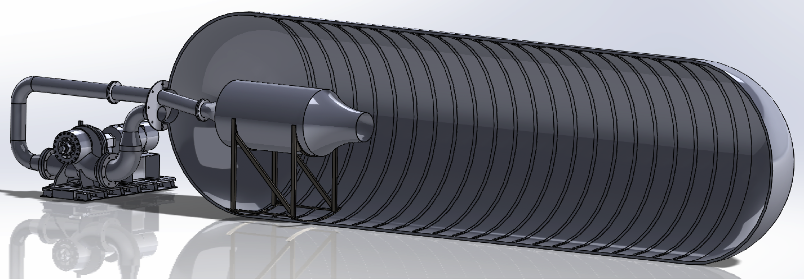
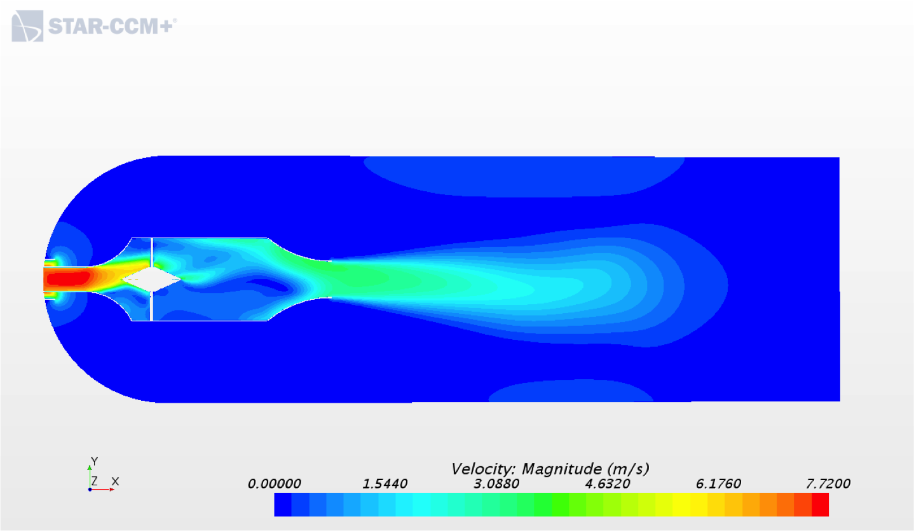
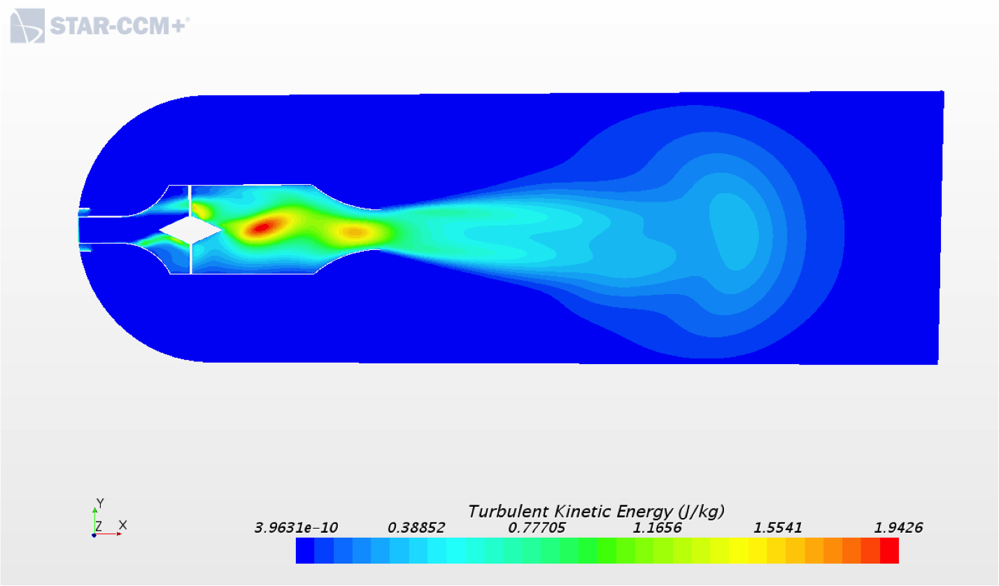

Naval Sea Systems Command Flow Generation Project
The Naval Undersea Warfare Center Division, Keyport, Washington (NUWCDIVKPT) operates a test facility that has a 45 foot long, 12 foot diameter pressure tank. The tank is used to asses weapon system performance for a number of different types of systems including torpedoes, defense systems, unmanned undersea vehicles (UUVs), and submarine sonar systems. The tank currently lacks a capability to provide flow during testing limiting the ability to accurately replicate real-world conditions for the systems under test. Using an externally located pump, a piping system, a distribution tank, and mounting system, a system was developed to provide flow.
The chosen design (seen above) would have minimal impact on the surrounding tank structure while simultaneously producing low turbulence flow with a velocity range from 3 to 6 knots. The flow generation unit uses a internal flow conditioning geometry with an externally mounted pump. Discharge and suction piping are divided between a single 24 inch access port that is located on the end of the tank. The discharge pipe feeds directly into a pressure vessel where the discharge momentum are diffused via a conical diffuser mounted within the pressure vessel. The pressure vessel then feeds into a convergent nozzle with a 21 in. exit diameter. A hexagonal grate located at the end of the convergent nozzle aids in the break down any large turbulent structures that may exist within the pressure vessel. The pressure vessel is mounted to the inside of the tank via mounting brackets that mount directly to the stiffening rib structure in the tank. The suction pipe is located directly behind the pressure vessel.
 Computational Fluid Dynamics would be the primary tool used to determine the flow characteristics of each design model. These calculations were done using third party applications such as ANSYS Fluent, and STAR CCM+. These programs utilize a computational mesh and the Navier-Stokes equations to calculate the fluid flow.